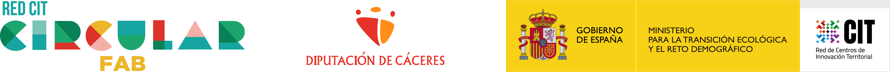
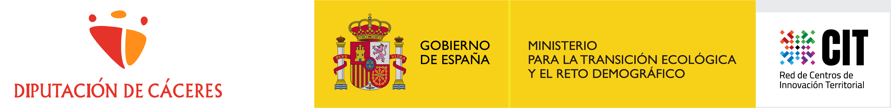
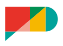
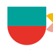
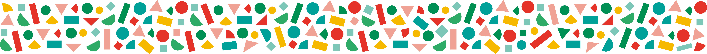
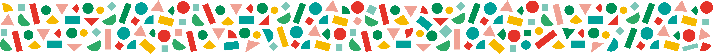
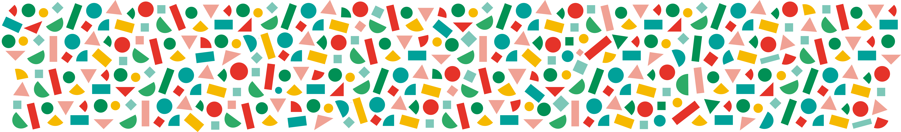
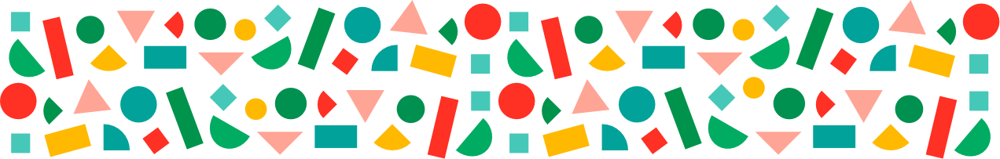
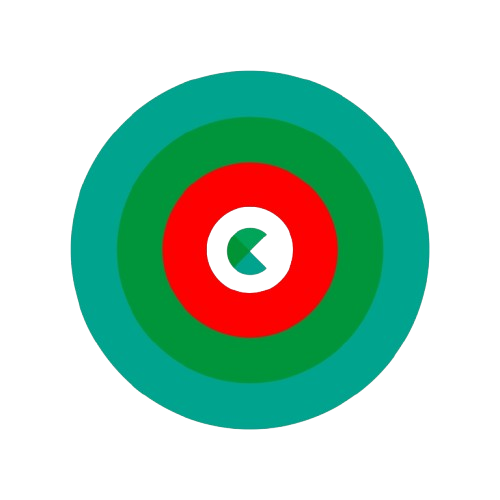

ISOTIPO
Recurso de marca disponible en `assets/branding/`. No se usa como icono funcional de interfaz.
Circular FAB EduSDK
Identidad Circular FAB
ISOTIPO
Recurso de marca disponible en `assets/branding/`. No se usa como icono funcional de interfaz.
MARCA + COMPOSICION INSTITUCIONAL

Composicion completa disponible para contextos institucionales.
LOGOS AUXILIARES

Recurso auxiliar de convivencia institucional, no equivalente al logotipo Circular FAB completo.
VARIANTE BLANCA
Se muestra sobre fondo oscuro. No se recolorea mediante CSS.
Logos, isotipo, espacios, tramas y recursos institucionales o de comunicacion.
Button, Card, Panel, Navigation, Question, Answer, Feedback y el resto de componentes funcionales.
Los cinco espacios


Estos SVG representan espacios Circular FAB. No son iconos funcionales generales del EduSDK.
Tramas corporativas




Composicion de ejemplo
El contenido conserva contraste y legibilidad. Esta muestra no convierte la trama en componente obligatorio.
Recursos de comunicacion
RECURSO AUXILIAR

Se muestra como recurso disponible. No se convierte en token, no entra en Navigation y no se usa como icono funcional general.
Portada de centro + curso
Portada experimental para cursos asociados a un centro. La marca general sigue siendo Circular FAB y el centro aporta contexto local, no una identidad paralela.
Card editorial
Ejemplo de card con imagen, metadato, titulo, resumen y accion para contenidos editoriales o formativos.
Ver feedback pedagogicoLa card puede presentar noticias, eventos o recursos asociados a centros sin mezclar identidad corporativa con controles de interfaz.
Ver portada de centroA. Brand
#4FBB75
#32855A
#4CAEA9
#E5B51A
#C7362E
#F1B3AA
B. Semantic
C. Typography
Heading: Exploracion guiada de IA aplicada
Body: texto largo de lectura comoda para instrucciones, explicaciones y contenido formativo.
Label: ESTADO, METADATO O ACCION
D. Components
Contenedor basico para resumenes y accesos no interactivos.
Estado hover y foco visible para una card accionable.
Bloque estructural para una zona de trabajo o lectura.
E. States
Selecciona una opcion para ver el estado elegido. Los estados correcto e incorrecto muestran texto, borde y senal adicional.
F. Feedback
Has identificado una decision trazable y reutilizable.
Revisa si la opcion depende de color o valores hardcoded.
El mismo componente funciona en light y dark.
Falta definir tokens de movimiento antes de animaciones mas ricas.
Footer institucional